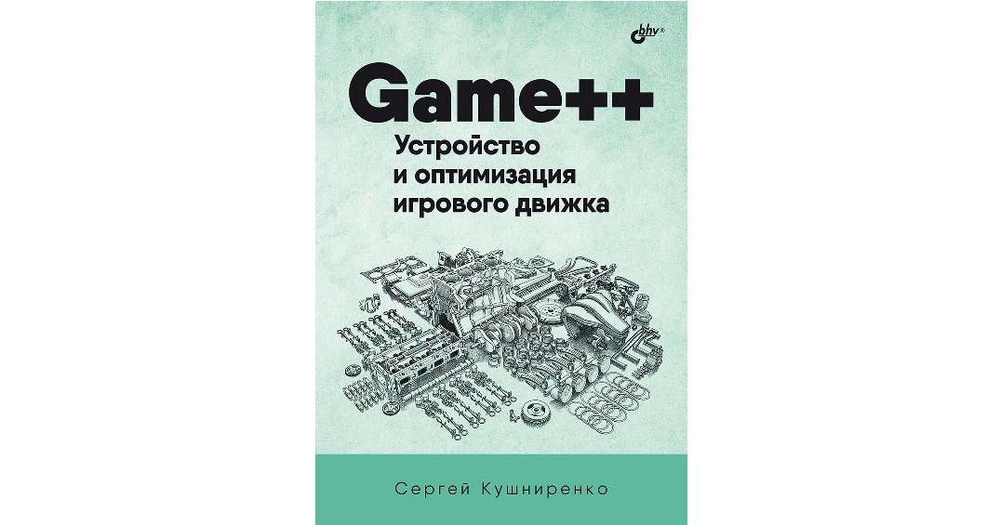
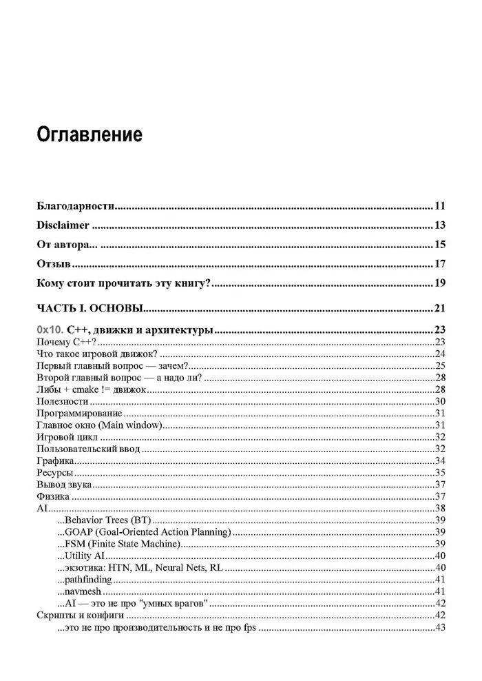
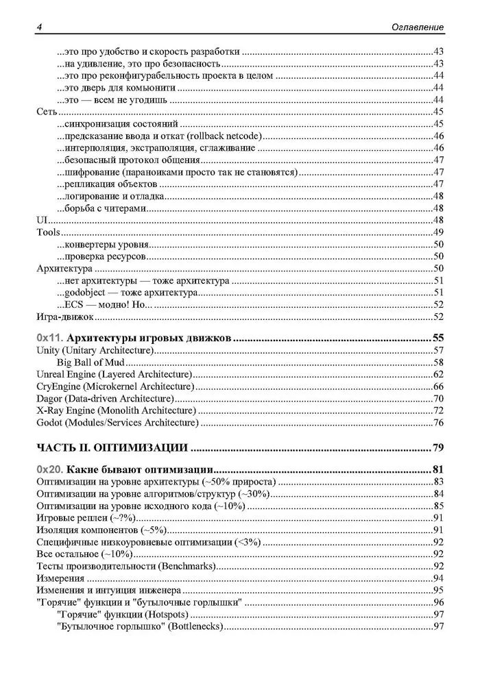
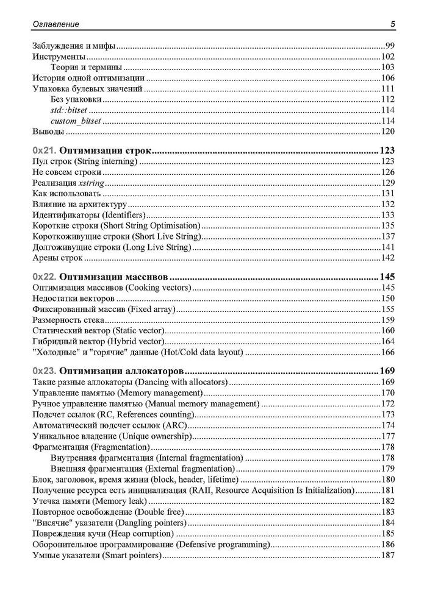
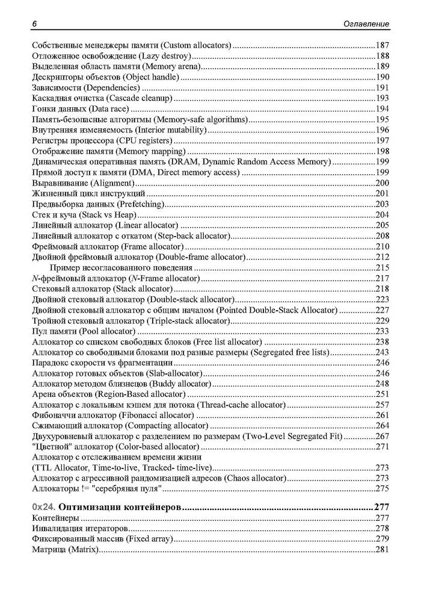
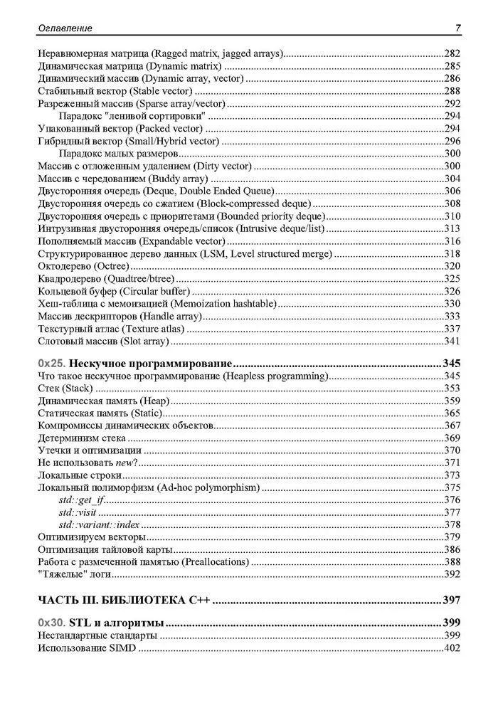
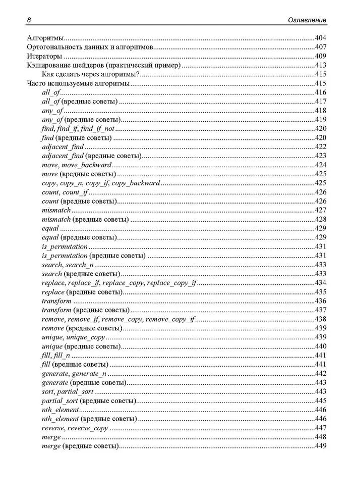
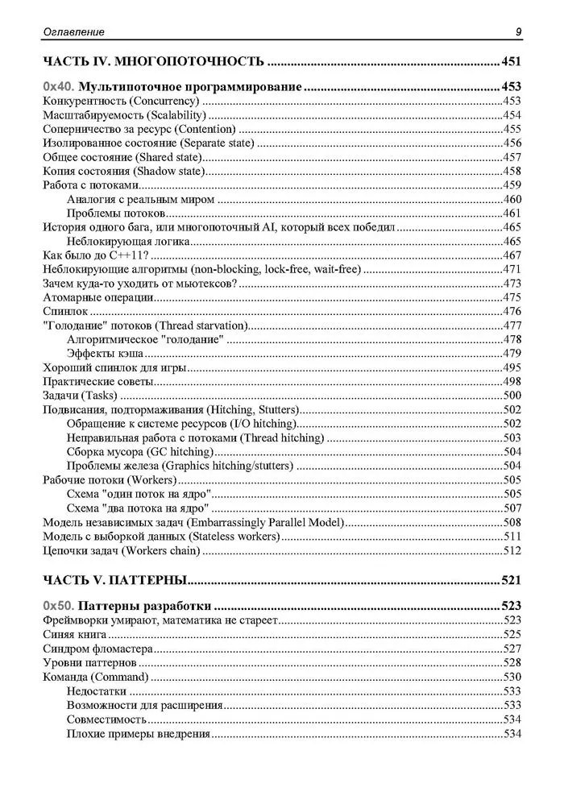
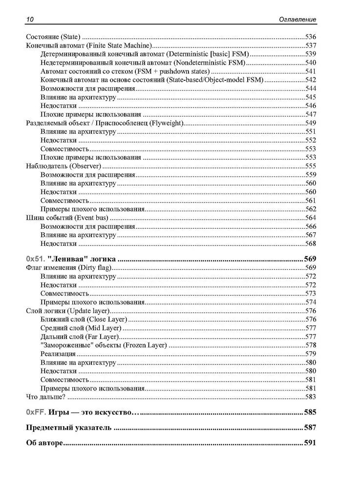

Иногда книга начинается с одной статьи, опубликованной в нужный момент и в нужном Хабре и в моём случае всё действительно началось с публикации про аллокаторы, которая несмотря на обилие технического материала, кода и схем набрала больше всего плюсов среди моих статей на околоплюсовую и игродев разработку. А дальше и сам цикл Game++ постепенно вырос из отдельных технических размышлений о C++, архитектуре движков и производительности в связный нарратив. За спиной Game++ стоит еще больше узкотехнических материалов в блоге и вики моей компании и я бы рад ими поделиться, да и делюсь периодически, но сами понимаете выкладывать можно не всё и даже из то, что выложено на Хабре, частенько было подрезано, ибо NDA и секретные технологии-бла-бла-бла. Та статья стала точкой, когда я увидел, что разрозненные тексты на самом деле образуют скелет будущей книги, нужно лишь перестать относиться к ним как к «постам» и начать воспринимать как главы. Идея написать книгу не пришла просто так, и несколько не связанных между собой людей и компаний связались и предложили переписать цикл статей в виде книги.
Оглавление








А еще в процессе написания статей я всё чаще стал замечать, что возвращаюсь к одним и тем же вопросам — что такое «хороший» C++ в движке, где проходит граница между философией и промкодом, и в какой-то момент стало понятно, что формат статьи не всегда подходит и слишком много контекста остаётся за скобками, слишком часто приходится обрывать рассуждение, потому что текст уже и так получился «слишком длинным для Хабра», я смотрю на доскролы и обычно статьи не читают дальше 15 минут. Книга стала способом расширить и объём, и примеры и дать больше философии.
Для меня особенно важно, что это не книга «про игровой движок» в узком смысле, и вы можете взять нетленку Грегори и там будет нужная и важная теория по разработке движка. Да у меня очень много примеров из движковой разработки, работы с памятью, потоками, аллокаторами, строками, практики оптимизации и архитектурных компромиссов, но по сути это книга о C++ как о языке инженерных решений и о том, как думать категориями данных, временем жизни, и поведением кода на реальном железе, а движок здесь только среда повышенной сложности, своего рода стресс-тест для языка, в которой хорошо видно, где концепции работают, а где лажают.
Отдельной частью этой истории стали люди, которые тоже стали частью книги — Анатолий Мамаев @Serpentine, который подарил книге большую часть рисунков, Олег Сивченко @OlegSivchenko, который курировал работу с издательством BHV и Леонид Кочин, который мужественно редактировал и вникал в эту туеву хучу терминов. С Олегом и Анатолием общение постепенно вышло за рамки Хабра и книги, в более общие вопросы инженерной культуры, качества технической литературы, надеюсь я могу называть их своими друзьями и наше общение не закончится с выходом книги. Не менее ценным стало общение с Андреем Карповым @Andrey2008, c его помощью и компании PVS получилось провести несколько вебинаров, которые оказались своеобразной проверкой на прочность, потому что объяснять свои идеи вслух, в живом формате, где аудитория задаёт вопросы и ловит тебя на неточностях, это не текст с картинками. Несомненно многие фрагменты книги стали лучше именно потому, что до этого были проговорены на таких встречах. А еще ребята теперь помогают с переводом книги на английский, за что им отдельная благодарность, надеюсь всё сложится.
Ну и конечно, отдельное спасибо Хабру и читателям, без вас этого бы тоже не случилось. Из всего процесса работы больше всего запомнилось не написание как таковое, хотя если оглянуться назад, то подбор материала занял около десяти лет, наверное с того момента, как я собственно и стал писать документацию и статьи, но редактирование — это совершенно другой вид обработки материала, и собирать разрозненные заметки, листы, салфетки, файлы и просто рисунки, написанные в разные годы и в разном настроении, и найти внутреннюю логику, ту самую «кость», на которой держится текст и которая проходит через всю книгу. И да, книга — это не сборник статей, а последовательность идей, где каждая следующая глава отвечает на вопрос, поставленный предыдущей, и пришлось многое переписать, что-то выкинуть, что-то переосмыслить. А еще надо было выровнять стиль, потому что даже статьи написанные одним человеком оказались очень разные по настроению, стилистике и подходу. Это было непросто и то, что есть в книге фактически уже четвертая итерация текста, и местами переписано почти полностью.
Книга не обязательно начинается с чистого листа, иногда она начинается с обработки уже проделанной работы и вопроса «что если это не просто так?» и может вы вдруг обнаружите, что у вас уже есть не просто тексты, а позиция, не просто статьи, а взгляд на профессию. На удивление достаточно узко-специализированная тематика получила хороший отклик на Хабре/Линкеде/соцсетях и пришло много вопросов, оставлю здесь частые, может кому будет интересно:
Q: Долго работали над книгой?
A: Почти 10 лет, если считать с момента сбора первых материалов для статьи про аллокаторы, год на подготовку статей, полгода на Game++ на хабре, еще год на черновик и работу с BHV.
Q: Когда выйдет и где купить?
A: Вышла, в онлайн магазинах. Может @OlegSivchenko подскажет где она есть в физ доступе чтобы полистать и присмотреться.
Q: Где купить в Европе?
A: Честно не знаю, посоветовали Boxberry, но я через него не заказывал книги.
Q: Будет ли электронная версия или только бумага?
A: Будет, позже.
Q: Почему остановились на BHV?
A: Так сошлись звезды.
Q: Какой тираж?
A: 1000.
Q: Почему так много страниц в итоге получилось?
A: Имхо наоборот мало, треть материала так и осталась за рамками.
Q: Нужен ли опыт работы с игровыми движками, чтобы читать книгу, или достаточно знания C++?
A: Желательно, но не обязательно. Большинство примеров действительно разобраны на примере из игр, но применимы везде.
Q: С какой главы лучше начинать, если уже читал цикл на Хабре?
A: Материал очень сильно переработан и доработан, половины на Хабре нет, думаю лучше с начала.
Q: Когда ориентировочно выйдет английская версия?
A: Честно, не знаю. Материала много и он непростой для перевода.
Q: Продолжите ли писать на Хабр после выхода книги?
A: А то (Нескучное программирование).
Q: Можно ли позвать вас на лекцию, семинар, вебинар?
A: Без проблем и даже нужно, но есть нюансы.
Q: Будет ли вторая часть?
A: Тут бы с первой разобраться, не думал еще.
Q: Cколько человек работали над книгой?
A: Тексты мои, рисунки по схемам и описанию делал Анатолий, еще порядка 20 человек имели доступ к черновику, оставляли комментарии и предложения, со стороны издательства я знаю пятерых, тут больше Олег расскажет.
Q: Как AI использовали для помощи (это видимо очень всех волнует, потому что я получил порядка 40 сообщений с этим вопросом)?
A: Originality.ai для проверки фактов и материалов, Claude Sonnet для обработки и сведения схем, разбора фоток рукописного текста и салфеток, PaperRater/Advego/Corrector для синтаксиса и пунктуации.
Q: Как с вами связаться?
A: Хабр, Linkedin, Game++ в tg, Boosty, Stepik.